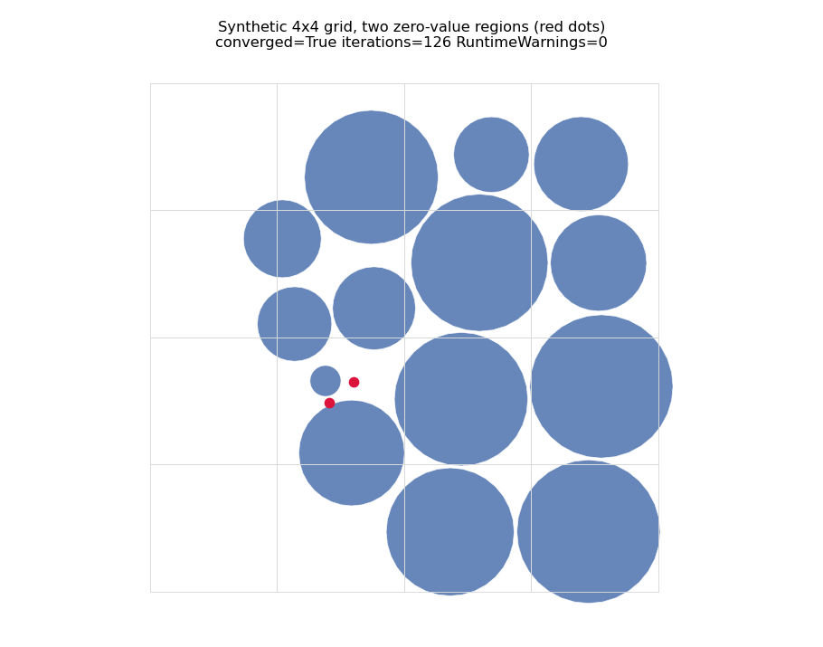
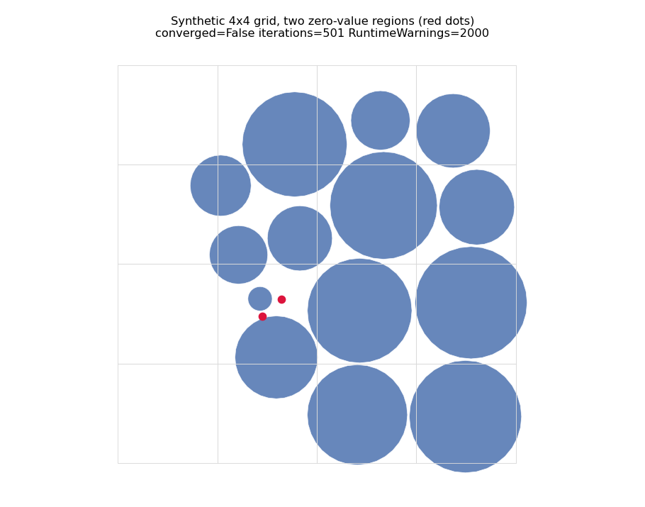
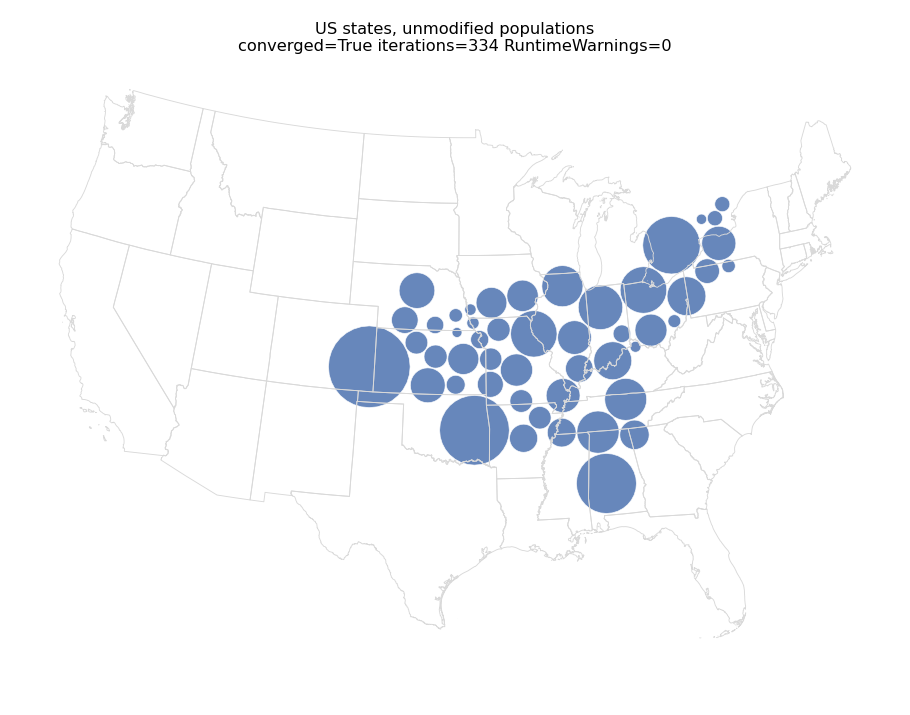
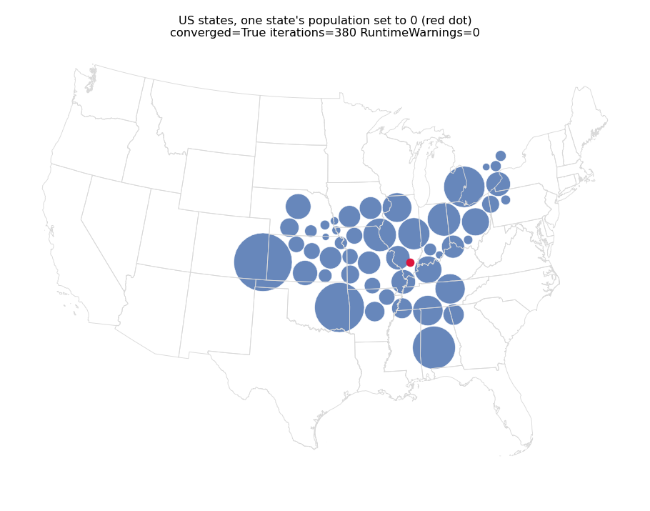

Same input, this branch. Bit-identical positions to before, same iteration count.
A zero sizing value gives a zero-radius symbol. The packing simulator measures drift and jitter in units of symbol radius, so those averages became inf/nan for the whole run, convergence could never be detected, and the loop ran to max_iterations while emitting ~2000 divide-by-zero warnings. Zero-radius symbols are now excluded from the drift/jitter averages, and radius-relative distances go through a helper that yields inf without warning. Look for the packed layout being essentially the same, but the run now stopping when it has settled instead of jittering on to iteration 501.
The zero-value symbol is drawn as a zero-area polygon, so it is invisible; its position is marked with a red dot. It sits at the same place before and after — the change is in when the loop stops, not in where a zero-size symbol goes.
The control pair (states_baseline) is the important one for regression: the positions are bit-identical, confirming that inputs without a zero sizing value are untouched.
An input where *every* sizing value is zero is still degenerate: the grid layout does not terminate, flow_density raises ZeroDivisionError, and centroid, physics and packing each still emit a divide-by-zero warning. That case is unchanged by this branch.

Same input, this branch. converged=True at iteration 126, no warnings. Positions differ from before by at most 0.077 on a grid of extent 4 (~2%) — the extra 375 iterations were jitter around the same equilibrium.

Synthetic 4x4 grid, two zero-value regions (red dots). converged=False, 501 iterations, 2000 RuntimeWarnings.
Same input, this branch. Bit-identical positions to before, same iteration count.

US states, unmodified populations. converged=True at iteration 334, no warnings.

Same input, this branch. converged=True at iteration 380, no warnings. Largest position change 49 km against a layout extent of ~1980 km (~2.5%).
US states, Kentucky's population set to 0 (red dot). converged=False, 501 iterations, 2000 RuntimeWarnings.